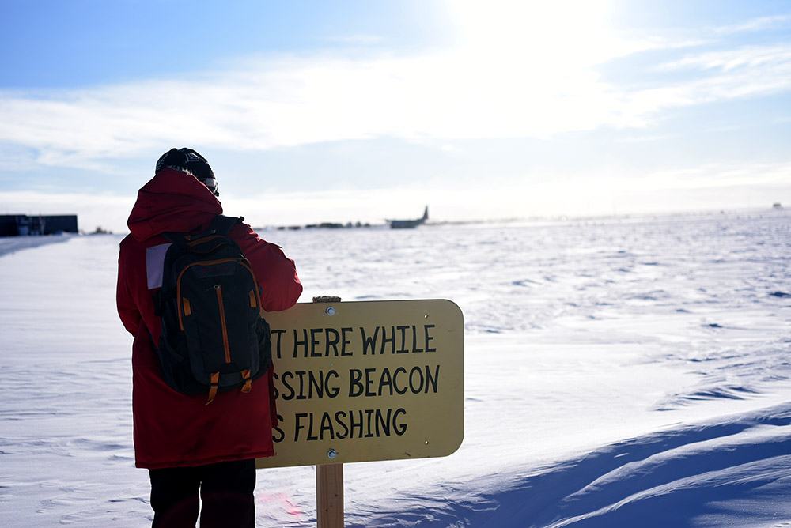
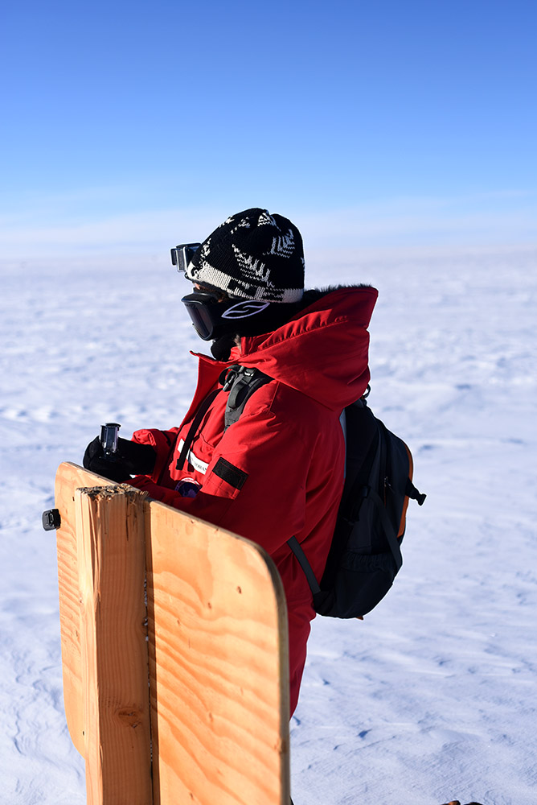
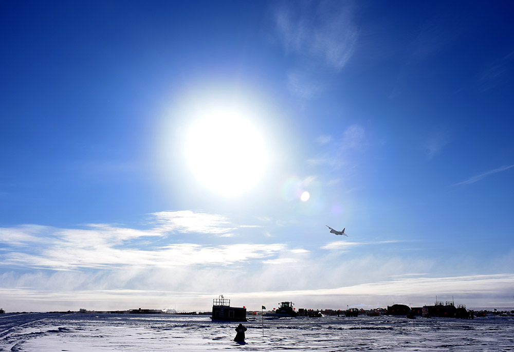
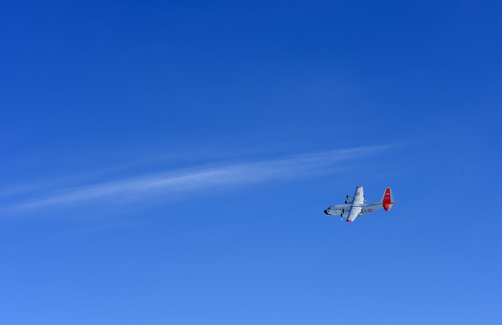
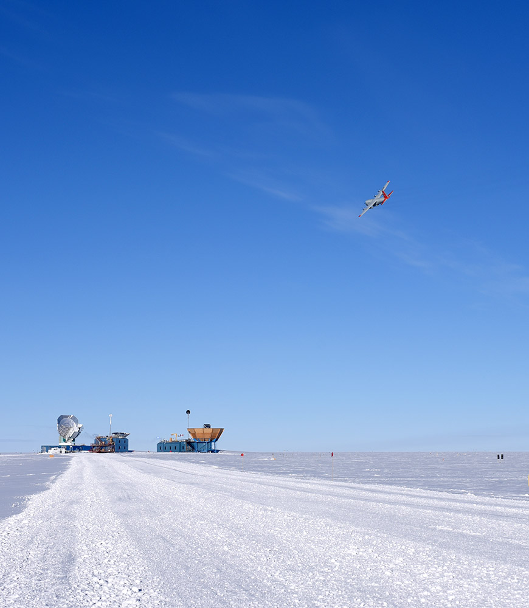
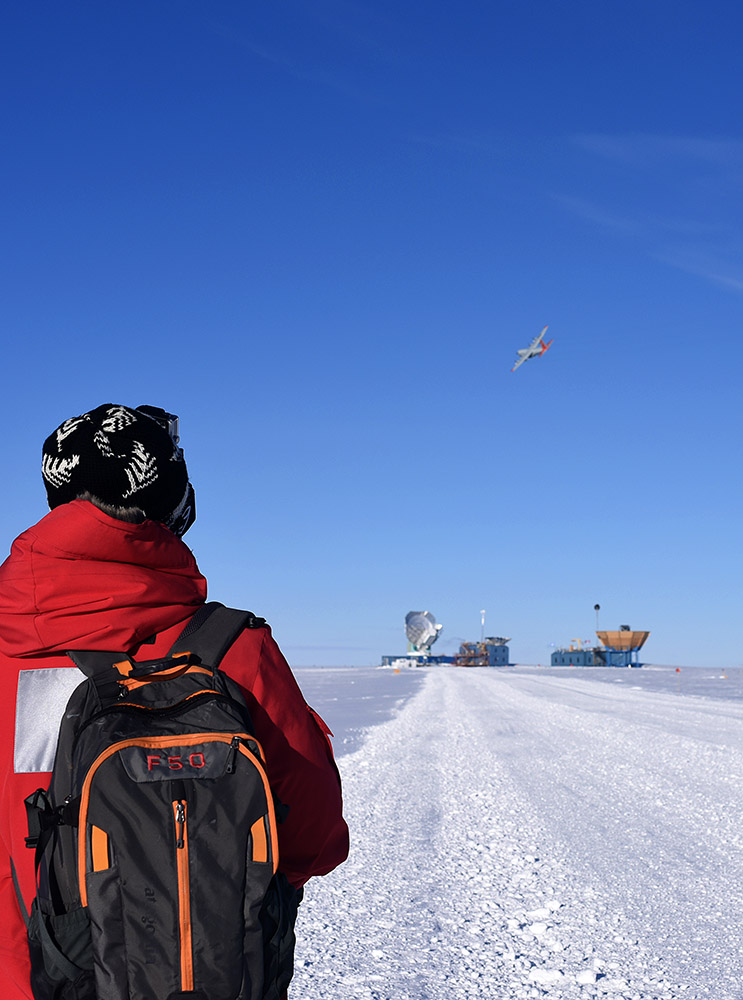
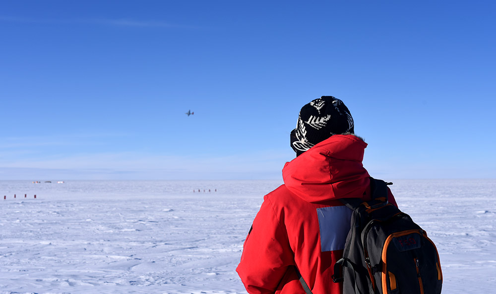
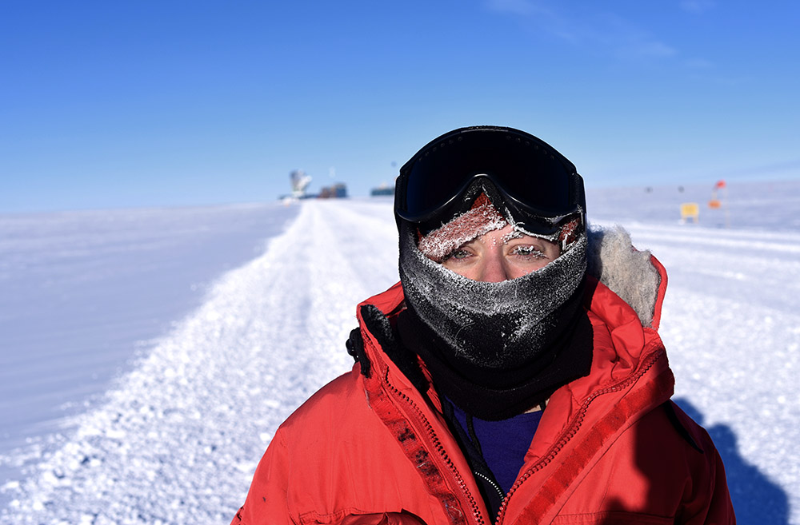

Captain's Web Log(4) - 16 February 2016 - So, when does the station close?
Now. It closes now.
Station close refers to the day the last plane leaves before winter. Our final plane came in from McMurdo about 2pm today and left with the last six summer staff about 25 minutes later. The next flight won't come in until late October,
more than 8 months from now,
so we're on our own between now and then. There are 48 of us wintering over: 10 scientists responsible for the various experiments that run over the winter, 9 facilities and maintenance personnel including electricians, plumbers, carpenters, and others,
5 IT and satellite communications people, 4 galley staff, 4 people in the logistics department (mainly handling materials and waste), 3 people in the power and water plants, 3 people responsible for vehicle and heavy equipment maintenance, 2 medical personnel
(one physician and one physician assistant), 2 people responsible for fuels, 2 meteorologists, 1 safety engineer, 1 machinist, 1 fire systems tech, and 1 station manager.
There are a number of long-running traditions here, and one of the biggest is to have a showing of 'The Thing' (all three versions) in the gym after station close. 'The Thing' is a horror film originally from 1951 that takes place at a
research base in Antarctica (or, in one version, the North Pole),
where a creature inhabits the bodies of some of the people, so you never know which of your "friends" is actually the monster. I'm a giant wuss, so I'm not about to watch
any horror film, least of all one about the
place where I'm trapped for the next 8 months, but I still think it's a neat tradition. If I'm feeling bold maybe I'll sit in the back and not pay attention.
It was a fitting time for the last plane. Yesterday, when the last plane was supposed to come in, the weather turned significantly overnight. All day a steady, strong wind kicked up particles of snow wrapping the whole station in a thick haze, as if Nature was
making a small nod to our impending isolation. Walking back from the telescope, it looked more like we were underwater than any scene I've ever seen before on Earth's surface. The dry snow driven by the wind piled up into small dunes like surge-carved sand
on the sea floor; the horizon was obscured entirely by the
shroud of blowing snow, but hints of the cloud ceiling were still visible, like rolling waves above us. Little rivulets of snow skittered along the surface, carried by the wind like sand caught in the ebb and flow of ocean waves,
except the wind is constant, all flow and no ebb. The once-groomed walkway from the station out to the telescope in just a day was almost entirely covered over by little snow dunes,
and apart from the flag line, the path is almost indistinguishable from the vast swaths of snow to either side of the path (and extending out to the horizon) that were never groomed.
Already nature has overtaken the hustle and bustle of human activity that marks the summer here, and for the first time, it really looks like we're on another planet.
The would-be last plane arrived here around 4 and circled overhead for over an hour before conceding that conditions were too bad to land and returning to McMurdo. The weather cleared overnight, and they made it in today,
dropping off one last bag of mail and leaving with the last of the summer crew.
The plane is gone and we are 48, on our own until October.
Christine (my SPT winterover partner in trying-not-to-set-the-telescope-on-fire) and I were walking back from the telescope just as the last flight landed. The runway doesn't cross the walkway between the telescope and the
station, but it points right at it, so when a plane is about to land, there are flashing beacons that warn people on the ground not to cross, just in case the plane overshoots and rolls right on past the end of the runway.
The sign says, "Wait here while crossing beacon is flashing."

Christine attaches a goPro to the sign to film the last plane's takeoff

Last plane, all loaded up and taxiing to the runway

Aaaaand they're off, in a plume of snow

The runway points almost directly at McMurdo, so usually planes take off and fly pretty much in a straight line all the way back to the coast, but for the last flight,
they traditionally circle around and do a farewell flyby of the station.



That's SPT on the left, BICEP in the middle and Keck on the right



Bonus picture of me looking rather frosty (photo credit: Christine)
